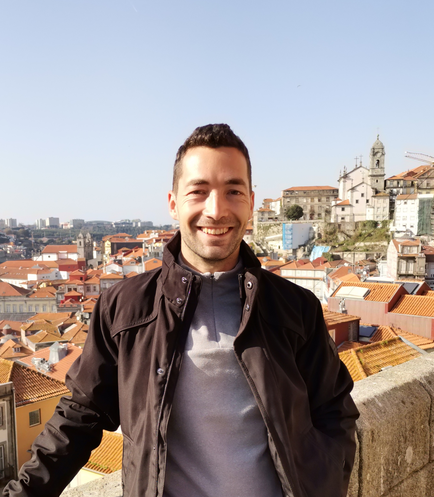
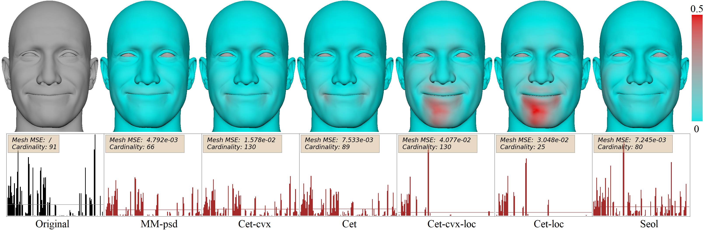
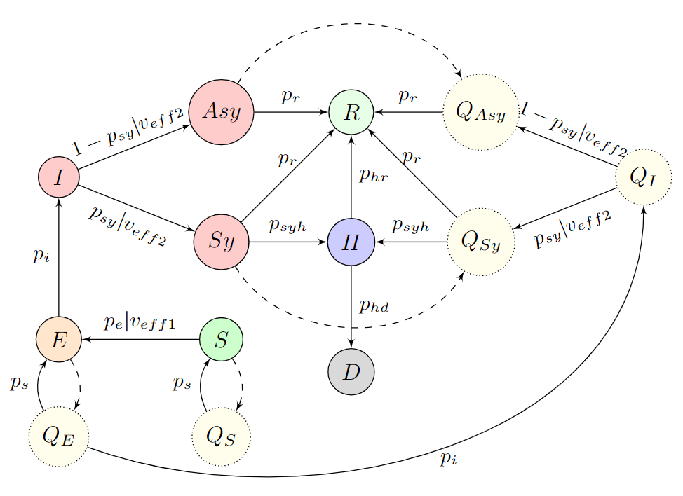
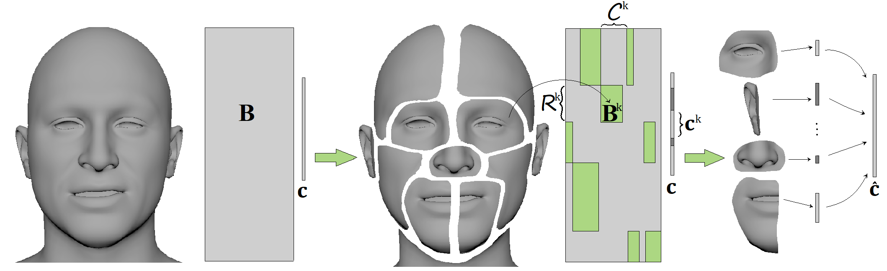

I am a Ph.D. candidate at the Instituto Superior Técnico, enrolled in an industrial Ph.D. program BIGMATH
(This project has received funding from the European Union’s Horizon 2020 research and innovation program under the Marie Skłodowska-Curie Grant Agreement No 812912).
I work under the supervision of Cláudia Soares from NOVA Uni in Lisbon and Dušan Jakovetić from the University of Novi Sad, and collaborate with 3Lateral Studio (Epic Games Company).
The main focus of our research is applying machine learning and optimization techniques to improve the algorithms used in a 3D animation.
Below you can check some of the projects we've been working on.

The project consists of two papers...

This paper is modeling the spread and the effects of COVID-19, taking into consideration the number of governmental restrictions and medical interventions.
The article is a continuation of the work I did for the ECMI competition with two co-authors, Filipa Valdeira (University of Milan) and Greta Malaspina (University of Novi Sad), and it is currently under submission to the Journal of Mathematics in Industry.
The case study observes Great Britain and Israel - these are the two countries that initially had the highest percentage of the vaccinated population.

This is research on a facial segmentation for 3D animation that I did together with Cláudia Soares from IST (Lisbon), Dušan Jakovetić from PMF (Novi Sad), and Zoranka Desnica and Relja Ljubobratović from 3Laterl (Epic Games). I presented the work at EUSIPCO 2021 conference, and the paper is available in the conference proceedings.